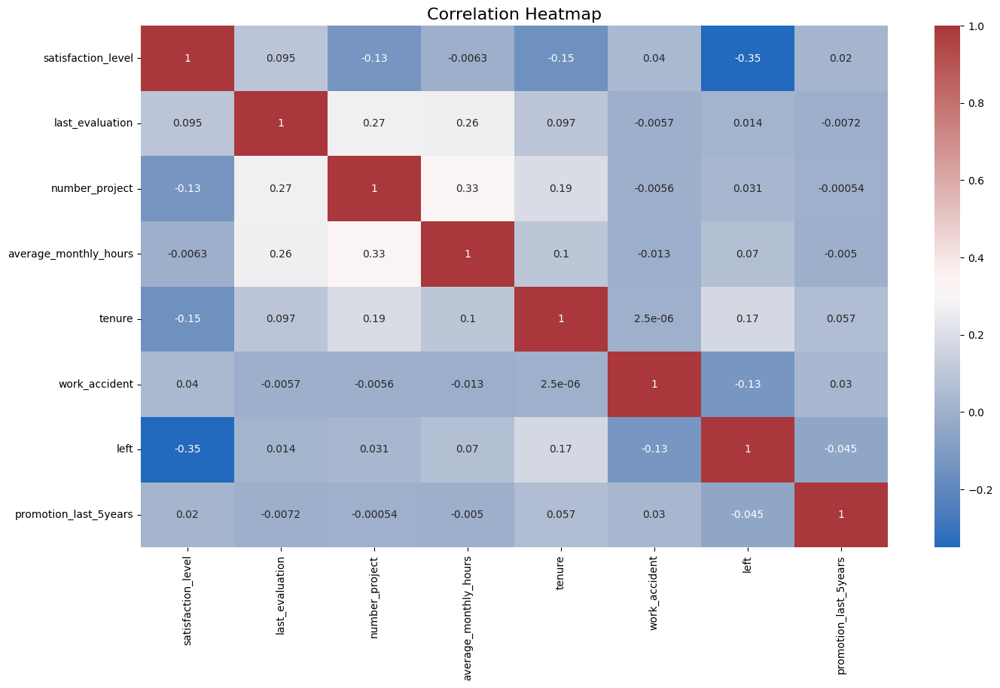
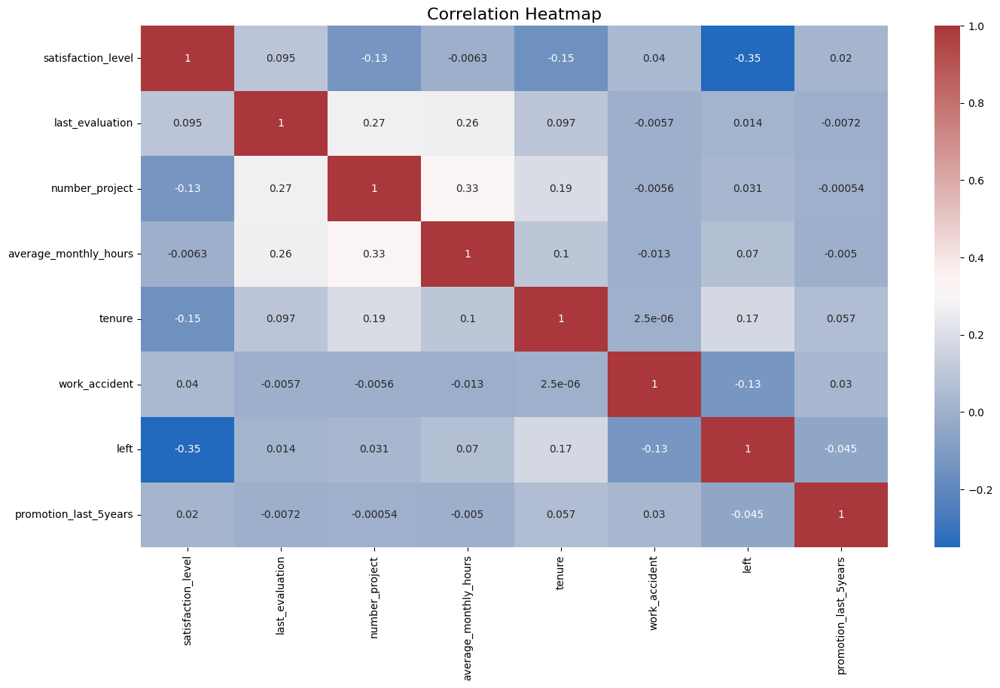
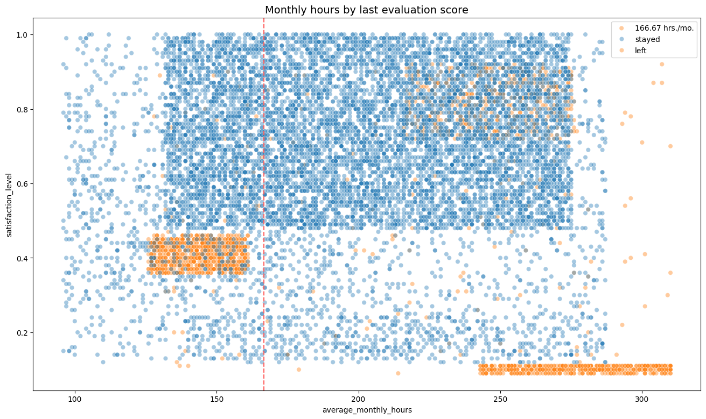
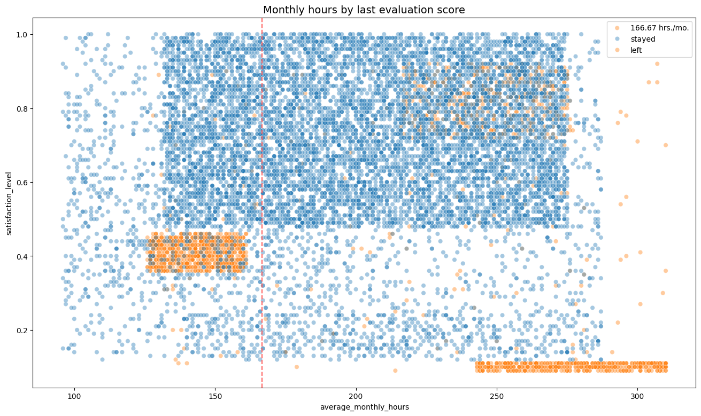
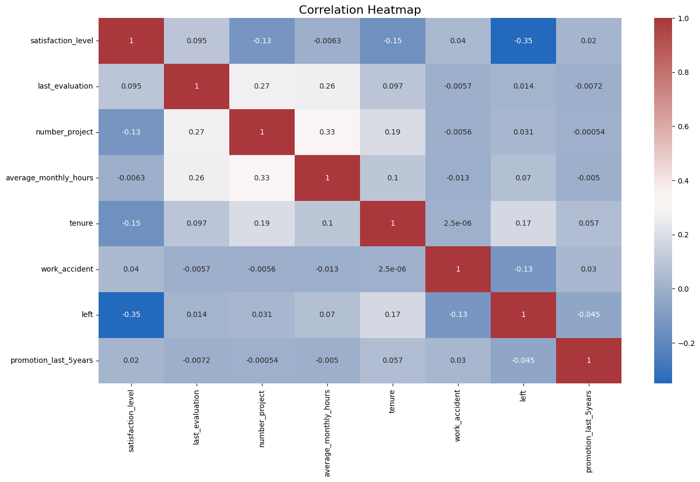
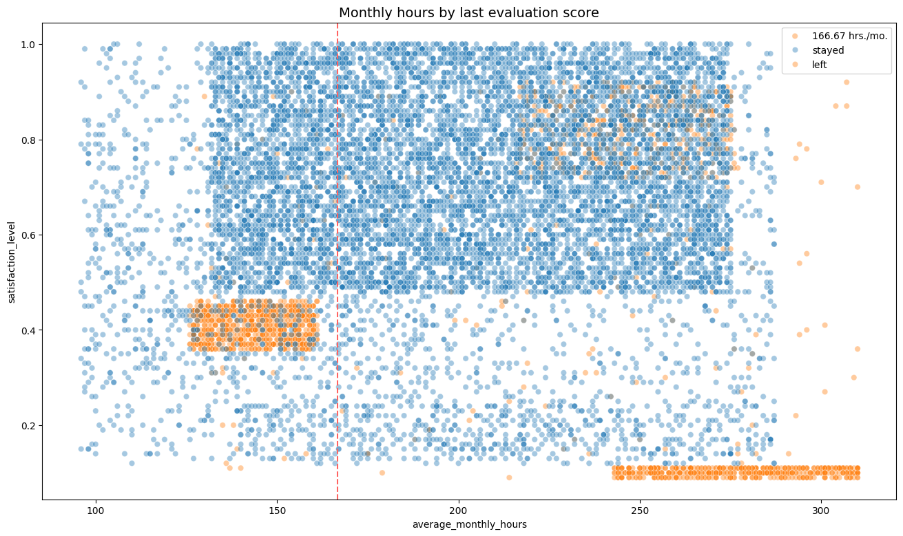

Gallery
Key visualizations were created using Matplotlib and Seaborn to illustrate attrition patterns, feature correlations, and model evaluation results.

 

 

Predicting employee attrition using Machine Learning
This project analyzes employee attrition for the HR department within the company "Salifort Motors" using a full machine learning pipeline. It covers data preprocessing, EDA, model building with Logistic Regression, Decision Tree, and Random Forest, and concludes with business-focused recommendations.
Explore on GitHubKey visualizations were created using Matplotlib and Seaborn to illustrate attrition patterns, feature correlations, and model evaluation results.


We tested Logistic Regression, Decision Tree, and Random Forest models. Evaluation was based on metrics like accuracy, precision, recall, F1-score, and AUC to identify the best-performing model for attrition prediction.
| Model | Precision | Recall | F1-Score | Accuracy | AUC |
|---|---|---|---|---|---|
| Random Forest | 0.954 | 0.922 | 0.938 | 0.980 | 0.956 |
| Decision Tree | 0.967 | 0.918 | 0.942 | 0.981 | 0.976 |
| Logistic Regression | 0.79 | 0.82 | 0.80 | 0.82 | N/A |
Let’s connect and create impact together.
LinkedIn GitHub